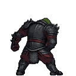
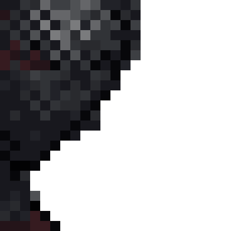
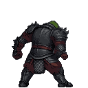
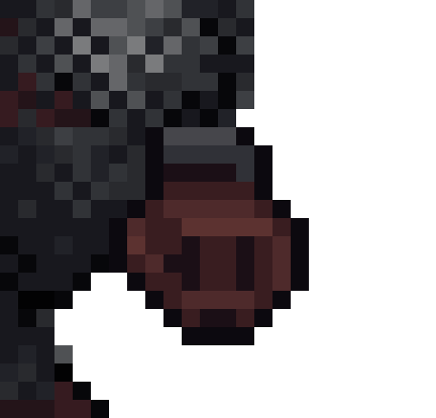

TECHNICALLY_COMPLETE · VISUAL_REVIEW_REQUIRED · global ARTISTIC_REVISION_REQUIRED · PENDING_CREATOR
Only dominant impact glove edited. Hoist/apex unchanged. No weapon overlays. No intermediates.




Changed 97 pixels, inclusive bounds [88, 75, 98, 86]; all other pixels identical. Zooms are diagnostics of exact exports, not art sources.